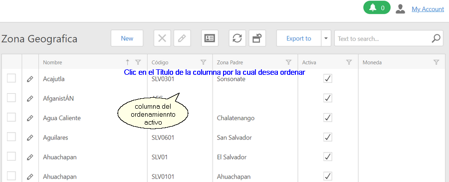

|
<< Click to Display Table of Contents >> Navigation: Funciones Generales > Ordenar Registros |
Con esta función se facilita al usuario cambiar el orden en las vistas tipo Lista. Para utilizarla debe seguir los siguientes pasos:
1.Seleccionar la opción correspondiente del menú
2.Dar clic en la opción para mostrar la vista de lista
3.Ubicar el puntero del mouse en el encabezado de la columna por la cual desea ordenar
4.Dar clic para ordenar por esa columna. El siguiente ejemplo corresponde a la lista de Instituciones

Una flecha hacia arriba en el título indica que el orden es ascendente por la columna donde se muestra. Flecha hacia abajo indica que el orden es descendente.
5.Para cambiar de ascendente a descendente solamente debe dar clic nuevamente en la columna. Para ordenar por otra columna repetir los pasos 3 y 4
Notas
▪El orden fijado se mantiene para las sesiones futuras
▪El orden se deshace y regresa a los valores por defecto de la vista cuando da clic en el botón . Cualquier otro cambio en la vista se revierte.